Desenvolvimento de um sinaleiro inteligente para cruzamento de veículos com foco em acessibilidade visual
Desafio: Criar um protótipo de um semáforo para um cruzamento de veículos que ajude pessoas com deficiência visual a atravessarem a rua com mais segurança. O sistema deve controlar o trânsito de veículos e oferecer recursos de acessibilidade. O projeto deve conter: Funcionamento correto das luzes do semáforo (verde, amarelo e vermelho). Tempo adequado para cada sinal. Um botão para pedestres solicitar a travessia. Sinal sonoro durante o período em que a travessia estiver liberada, auxiliando pessoas com deficiência visual. Contagem de tempo ou outro recurso que indique quanto tempo resta para atravessar. Explicação de como o projeto contribui para a inclusão, a acessibilidade e a segurança no trânsito.
Objetivo da atividade: Aplicar conceitos de programação, eletrônica e robótica para desenvolver uma solução que torne os cruzamentos mais seguros.
Detector de Presença com Sensor PIR
Desafio: Desenvolver um protótipo com Arduino e Sensor PIR para detectar movimento/presença, acionando sinal luminoso e sonoro — aplicável em automação residencial, segurança e acessibilidade. Materiais Utilizados: - Placa Arduino Uno R3 - 01 Módulo Mini Sensor de Movimento/Presença PIR - 01 LED (5mm) - 01 Buzzer (para aviso sonoro) - Resistor de 220Ω - Jumpers Macho-Macho e Fêmea-Fêmea - Protoboard Montagem das Conexões - Sensor PIR: - VCC → 5V do Arduino - GND → GND do Arduino - OUT → Pino 8 - LED: Anodo (+) → Pino 13 | Catodo (-) → GND (via resistor) - Buzzer: Positivo → Pino 7 | Negativo → GND
Código de Programação: arduino /* Projeto: Detector de Presença - Sensor PIR */ // Definir pinos const int Pino_Sensor = 8; const int Pino_LED = 13; const int Pino_Buzzer = 7; void setup() { // Configurar pinos pinMode(Pino_Sensor, INPUT); pinMode(Pino_LED, OUTPUT); pinMode(Pino_Buzzer, OUTPUT); } void loop() { // Verificar se detectou movimento/presença if (digitalRead(Pino_Sensor) == HIGH) { // Acionar LED e som digitalWrite(Pino_LED, HIGH); tone(Pino_Buzzer, 1000); // Som de 1000Hz delay(5000); // Permanecer aceso por 5 segundos noTone(Pino_Buzzer); } else { // Desligar quando não houver movimento digitalWrite(Pino_LED, LOW); } delay(100); // Pequena pausa }
Explicação do Funcionamento: O Sensor PIR (Infravermelho Passivo) funciona detectando a radiação infravermelha emitida por corpos quentes (como seres humanos). Ele capta a diferença de temperatura na área monitorada: - Quando detecta presença/movimento: envia sinal para o Arduino → acende o LED e ativa o buzzer por 5 segundos. - Quando não detecta: mantém LED e som desligados, economizando energia. É um dispositivo simples, barato e eficaz — usado em luzes automáticas, alarmes e segurança! Resultado Final: O protótipo funciona perfeitamente: ao passar na frente do sensor, ele identifica a presença e avisa com luz e som. Cumpre o objetivo de aplicar conceitos de eletrônica e programação com o sensor estudado na aula, desenvolvendo pensamento lógico e habilidades de robótica.
Imagens e Vídeos do Projeto
Semáforo inteligente
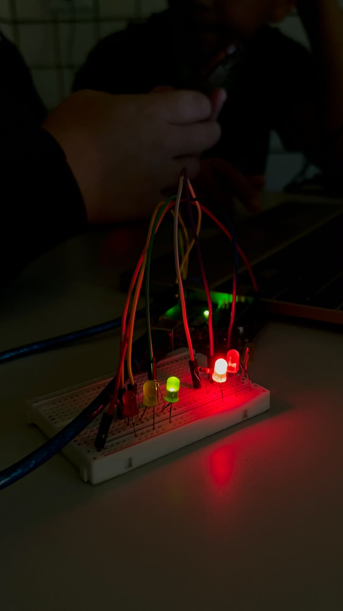
Sensor de Fumaça
Sensor de movimento

Gráficos das Pesquisas
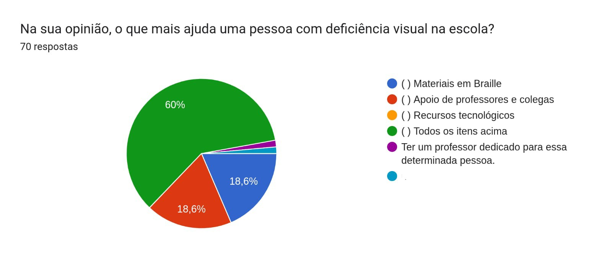
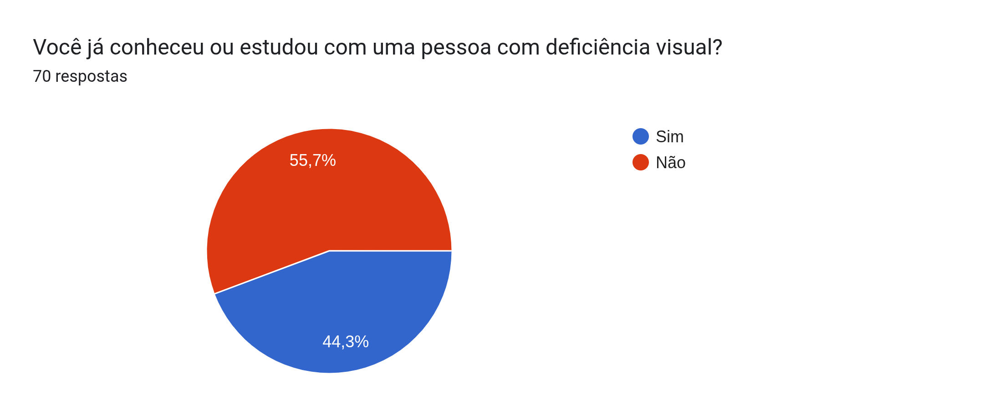
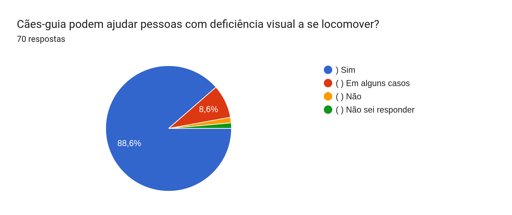
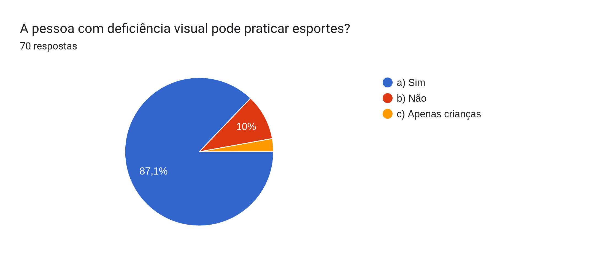
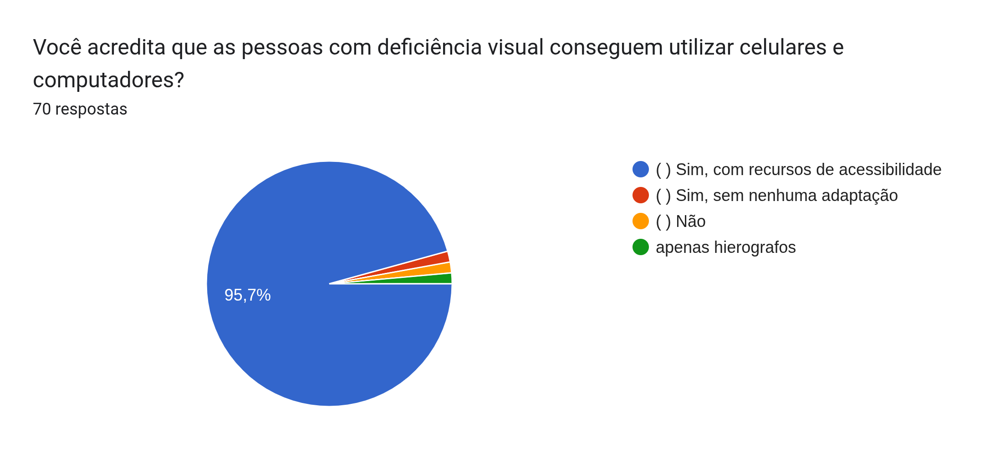
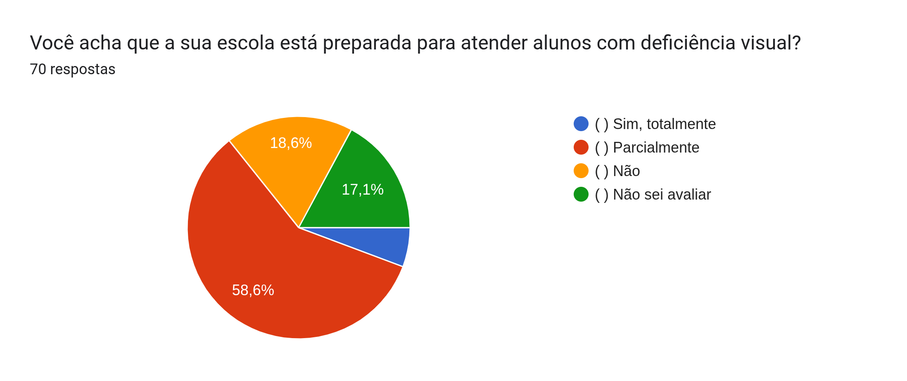
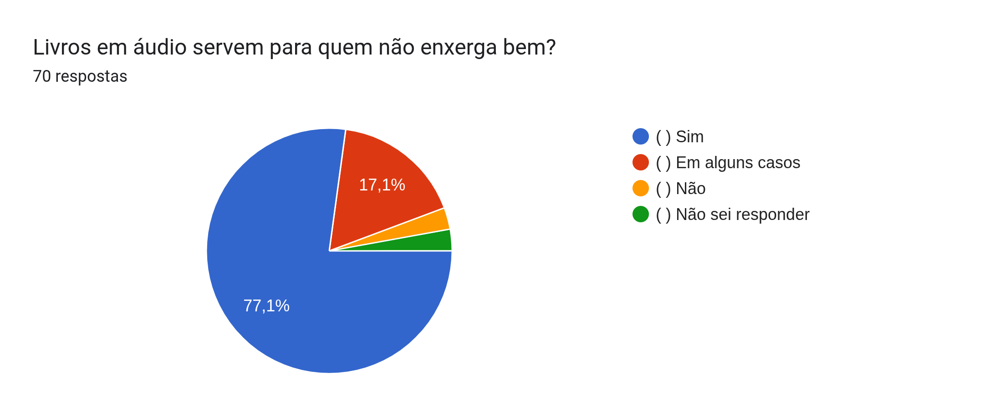
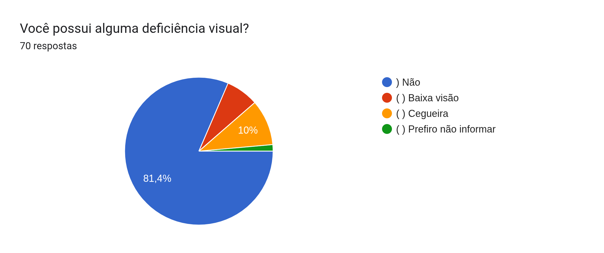
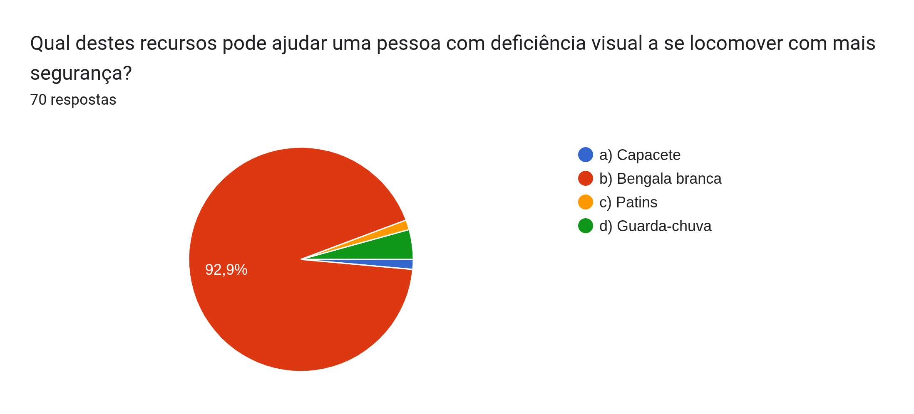
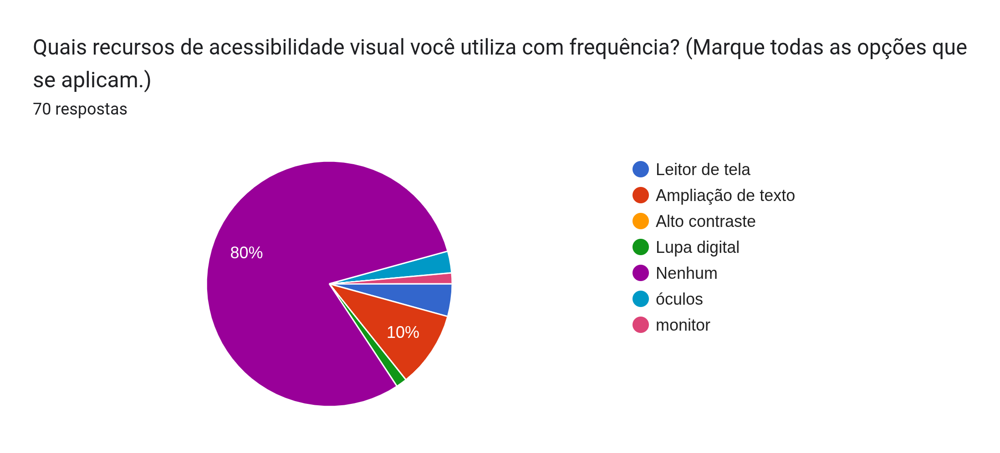
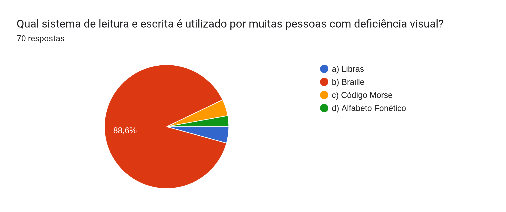